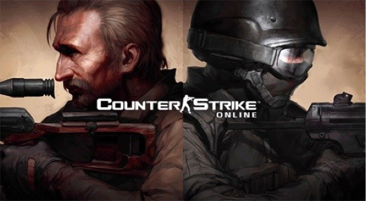

넥슨이 밸브 코퍼레이션과 제휴하여 2007년 부터 서비스 중인 FPS 게임, 카운터 스트라이크 1.6 버전을 베이스로 컨디션 제로와 삭제장면의 캐릭터 스킨과 봇 기능, 무기, 아이템, 맵과 일부 시나리오를 추가하고 변형한 게임이다.
흔히 카온, 카스온라인이라고 부르지만 좀비 모드(좀비전)의 비중이 너무 커져서 유저들은 좀비 온라인이라고 부르기도 한다.
특이하게 CT와 TR로 나뉘어 서로 대결을 하는 원래의 카운터 스트라이크와는 달리 좀비모드가 더 인기있다.
이 때문인지 아이템 추가나, 여성 캐릭터 추가 등을 빌미로 좀비모드2 업데이트가 이루어지기도 하였다.
좀비 온라인이라고 불리기도 하며, 그냥 카스를 즐기려는 사람들에게 무한한 짜증을 동반해주기도 하며 채널마다 좀비모드플레이어만 한가득이다 보니, 다른 모드를 플레이하려면 몇개의 채널을 뒤적여야 했었다, 하지만 지금은 서버에서 맞춤 입장 시스템을 통하여 자신이 원하는 모드의 방이 있는 서버를 찾아서 들어가는 것이 가능하며 정 원한다면 서버, 모드, 맵을 전부 골라서 원하는 서버의 원하는 모드와 맵이 있는 방을 찾아가는 것이 가능해졌다.